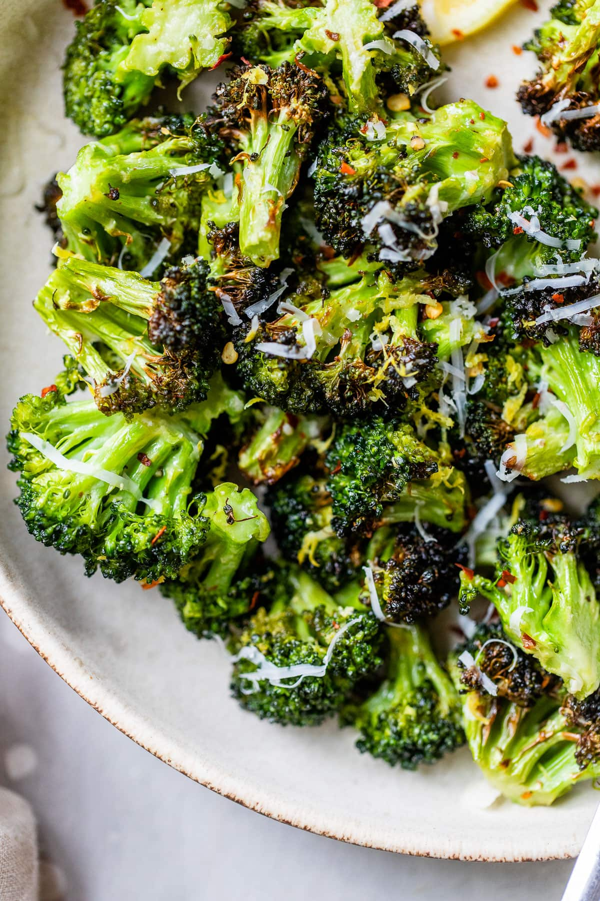

Air Fryer Broccoli

Fast and Easy Broccoli for Any Night
If you love to pluck the darkest, crispiest veggies right from the pan,
Air Fryer Broccoli is for you! Deeply charred and ultra
crispy, this is broccoli at its most addictive, with very little oil
required. Ready in just 10 minutes!
How can a vegetable taste THIS GOOD?!
- Crispy Deliciousness.
- Faster Cook Time
- Healthy
Ingredients
-
1 pound broccoli florets
cut into small, evenly sized pieces (about 4 to 5 cups florets, 2
small heads, or 2 pounds with stalks attached)
- 2 tablespoons extra virgin olive oil
- 1.2 teaspoon kosher salt
- 1/4 teaspoon garlic powder
- 1/4 ground black pepper
-
1/4 teaspoon granulated sugar |
optional; helps with caramelization
- 2 tablespoons water
Optional Toppings
- 1 teaspoon lemon zest from about 1 medium lemon
-
1 tablespoon freshly squeezed lemon juice
about 1/2 medium lemon
- 2 tablespoons freshly grated Parmesan cheese
- Pinch red pepper flakes
Preparation
-
Place the florets in a mixing bowl and top with the olive oil, salt,
garlic powder, black pepper, and sugar. Toss to coat, making sure to rub
the florets evenly with the oil and spices to prevent burning.
-
Preheat your air fryer to 400°F according to the manufacturer’s
instructions (for my air fryer that is 3 minutes preheat time).
-
Add the water to the bottom of the air fryer (it will hiss and
splatter). Add the broccoli (if adding toppings, keep the bowl handy and
don't wash it yet). Let cook for 4 minutes.
-
Remove the basket and with tongs, toss the broccoli. Return it to the
air fryer and continue cooking for 4 to 8 additional minutes, until
crispy outside and tender when pieced with a fork. The cook time will
vary based on your air fryer, so keep an eye on it and toss the broccoli
every few minutes to promote even crisping.
-
Serve immediately, or if adding toppings, transfer the broccoli back to
the mixing bowl. Top with the lemon zest, lemon juice, Parmesan, and/or
red pepper flakes. Stir to coat. Serve hot.